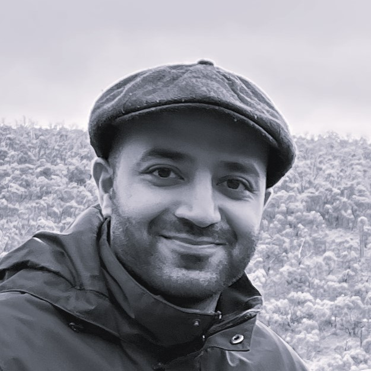

Sahand Assadzadeh
Physics, Complex Systems, Machine Learning,
Data Science
2022 -
Data Scientist
Transport for NSW
What I do:
- Analysis and derivation of insights from vehicle traffic data generated by the Sydney Coordinated Adaptive Traffic System (SCATS).
- Development of Machine Learning algorithms for estimating network (traffic) performance, detection of anomalous traffic, and visualization of road traffic metrics in a BI dashboard.
- CI/CD pipeline engineering, database management and schema design, and integration of streaming and batch data for analytics purposes.
2019 - 2022
Research Scientist (ML)
Agriculture Victoria
- Development of machine learning models for characterization of grain quality, including deep learning and machine vision applied to image/video/spectral data types.
- Model and algorithm development for prediction of quality traits in grains based on RGB, LiDAR, NIR, multispectral, and hyperspectral data.
- Design of ML experiments, data collection and cleaning pipelines, model training and validation, and deployment.
2014 - 2018
PhD (Physics)
The University of Sydney
- I worked on modelling the dynamics of the corticothalamic system across arousal states (sleep and wake), under the supervision of Prof. Peter Robinson in the Complex Systems group
- Contributed to the
NFTsim
software package. NFTsim is written in C++ and numerically solves differential equations that model brain dynamics and activity.
2010 - 2014
BSc (Honours)
The University of Sydney
- My Honours degree was completed in partnership with CSIRO, where I worked at the Lindfield (NSW) facitly's nanofabrication labs to synthesize
carbon nanotubes and test them for applications such as water purification.
- I also completed Courses in Quantum Field Theory, General Relativity, Astrophysics, Condensed Matter Physics, among others.
- Graduated with 1st Class Honours.
Teaching
2023 -
Instructor
Monash University / EdX
- Instructor for the Monash University part-time (24 week) data analytics bootcamp.
- The course covers topics including Data Analysis using VBA, Python (pandas, APIs, web apps),
Data Visualization (Tableau, JS, matplotlib), Databases (SQL, NoSQL), Hadoop, and Machine Learning/AI.
2014 - 2017
Physics lab and tutorial instructor
The University of Sydney
- Demonstrator for the junior Physics experimental lab, and tutorial/problem solving sessions.